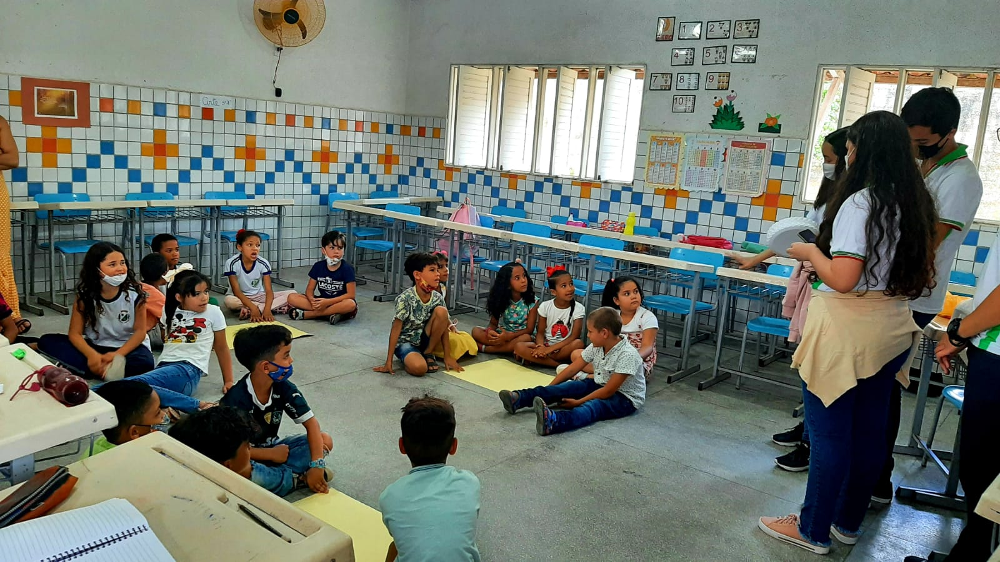
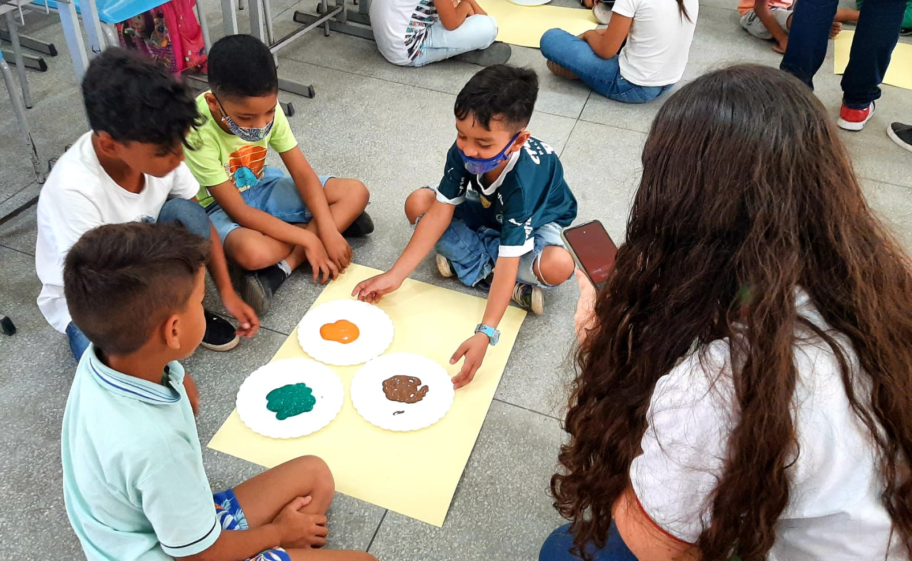
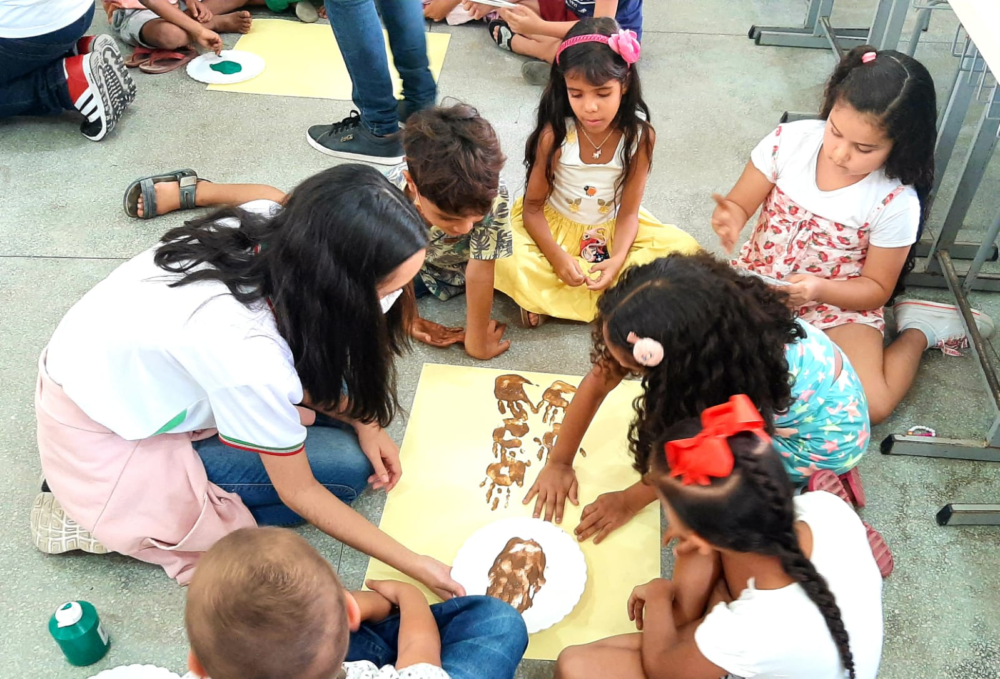
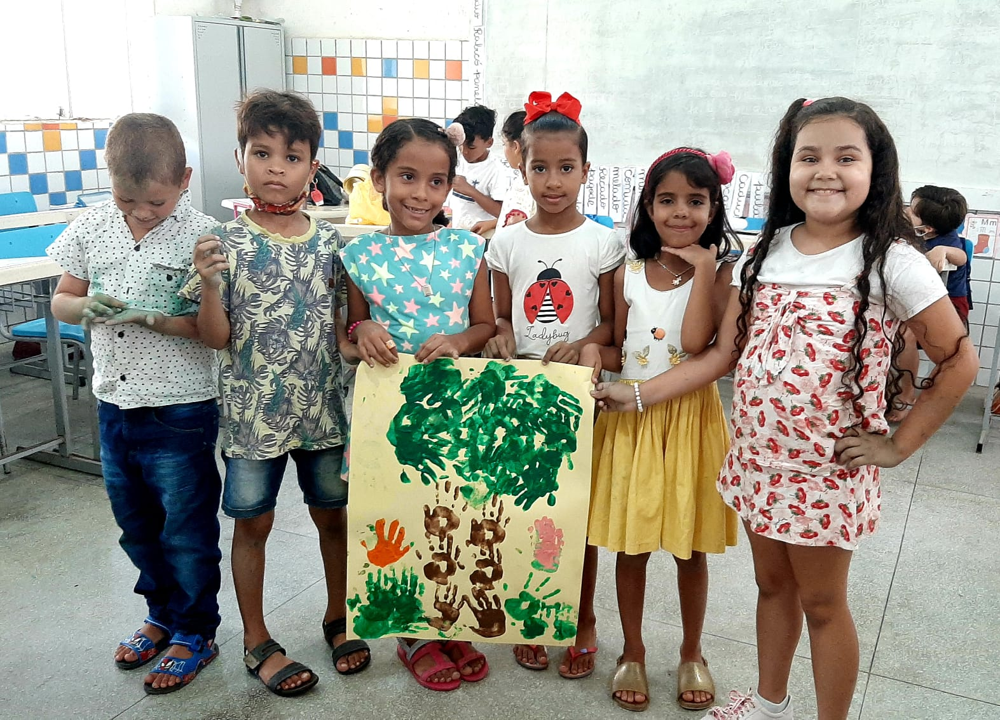
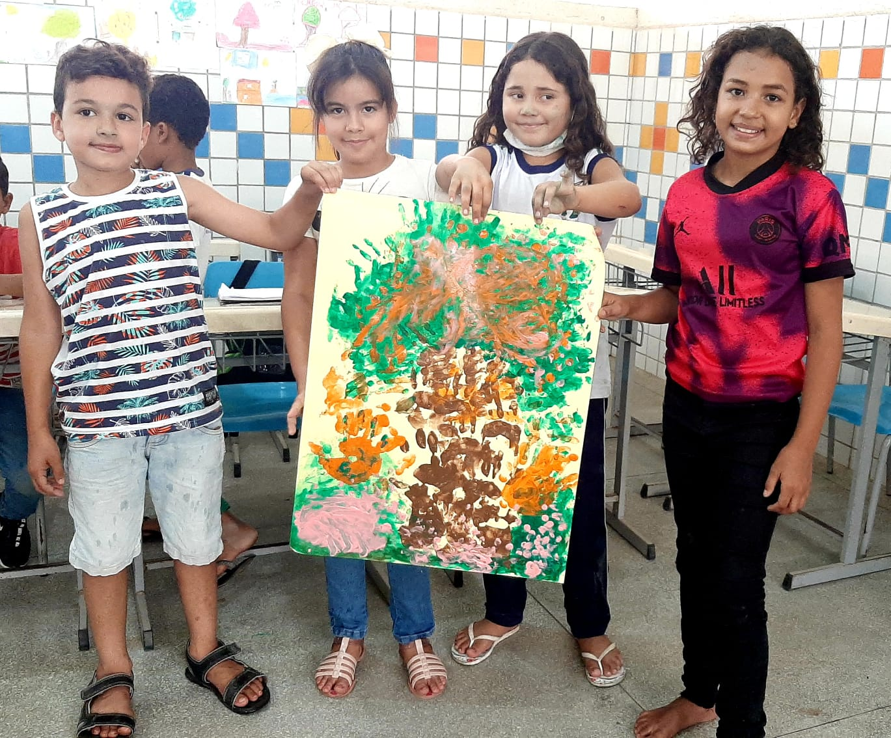

Materiais:
- Cartolina;
- Pratos descartáveis;
- Tintas guache da cor verde, marrom, laranja e rosa.
Como fazer?
- Abra a cartolina e coloque-a no chão;

- Coloque um pouco de cada tinta em um pratinho descartável separado;

- Pegue a mão e coloque no pratinho com a tinta marrom, depois retire-a e mele a outra mão.
Com as mãos meladas de tinta marrom comece a fazer o tronco da árvore;

- Em seguida repita o mesmo processo com as outras cores para fazer as folhas da árvore, o gramado, flores e o que mais a sua imaginação lhe permitir;


- Quando acabar, coloque o cartaz para secar e depois cole-o na sala.